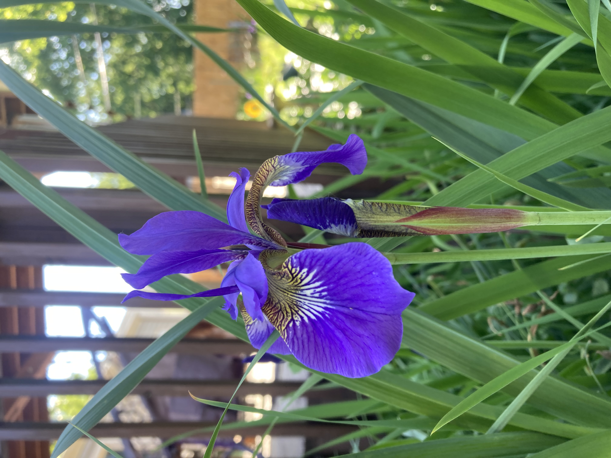
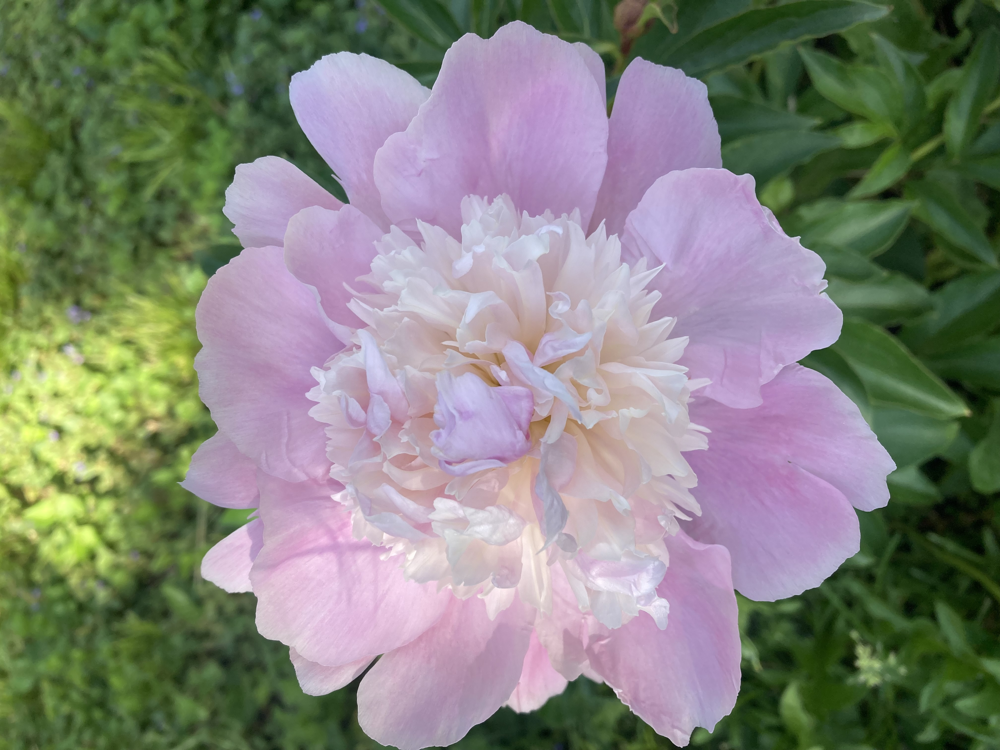
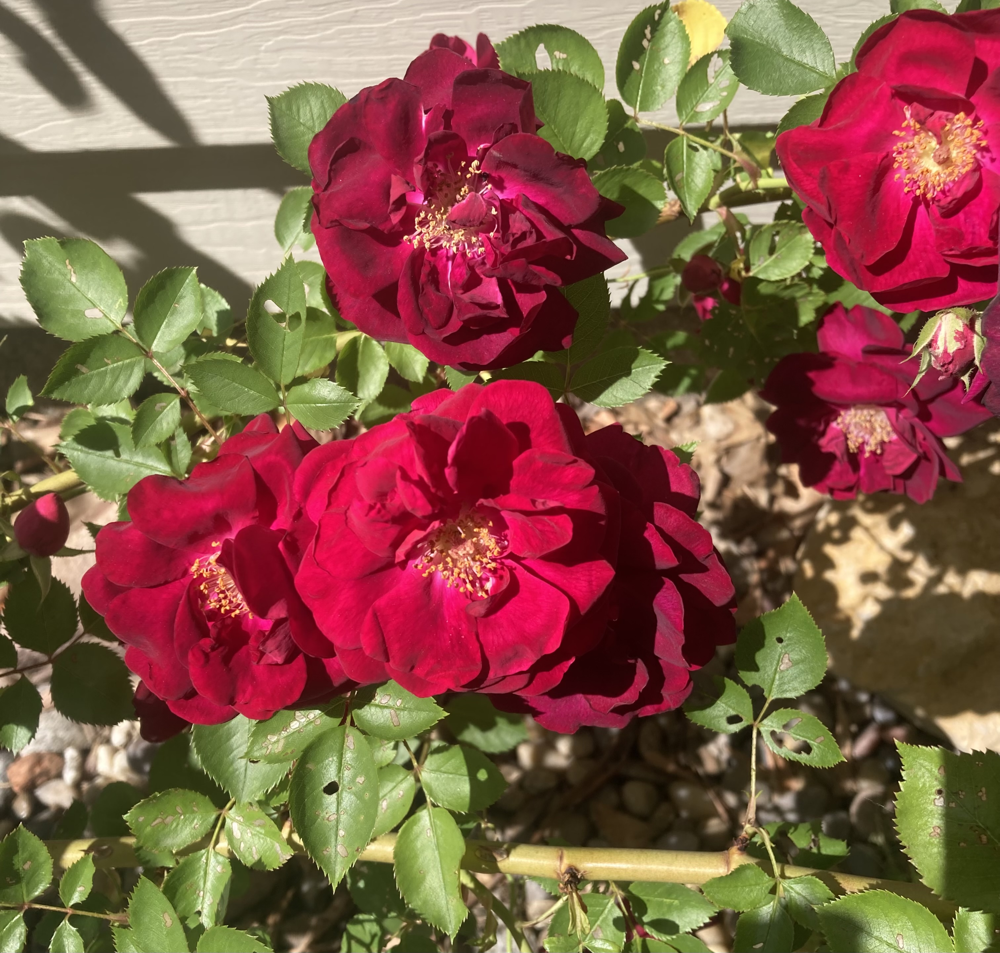

Perennials are the backbone of a lasting garden. These plants return year after year with the right care, offering consistent beauty and structure to your outdoor space.
Siberian Iris
- Full sun to part shade (6+ hours ideal)
- Moist, well-draining soil
- Water regularly, especially first year
- Fertilize early spring (10-10-10)
- Deadhead flowers; cut back in fall
- Divide every 3-5 years
- Cold-hardy in Zone 6a
Creeping Phlox

- Full sun preferred
- Sandy, well-draining soil
- Water during dry spells
- Fertilize lightly in early spring
- Trim after bloom to shape
- Divide every 2-3 years
- Cold-hardy in Zone 6a
Peony
- Full sun (6-8+ hours)
- Rich, well-draining soil
- Moderate watering; avoid soggy roots
- Low-nitrogen fertilizer in spring
- Deadhead and cut back in fall
- Divide every 10-15 years
- Cold-hardy in Zone 6a
Clematis

- Full sun top, shaded roots
- Neutral to alkaline, compost-rich soil
- Water deeply 1-2 times weekly
- Fertilize monthly if desired
- Prune lightly in early spring
- Train on trellis or fence
- Cold-hardy in Zone 6a
Shrub Rose
- Full sun (6-8 hours/day)
- Loamy, compost-rich soil
- Water weekly at base
- Fertilize in spring; optional re-feed
- Deadhead and prune early spring
- Disease-resistant, but good airflow helps
- Cold-hardy in Zone 6a